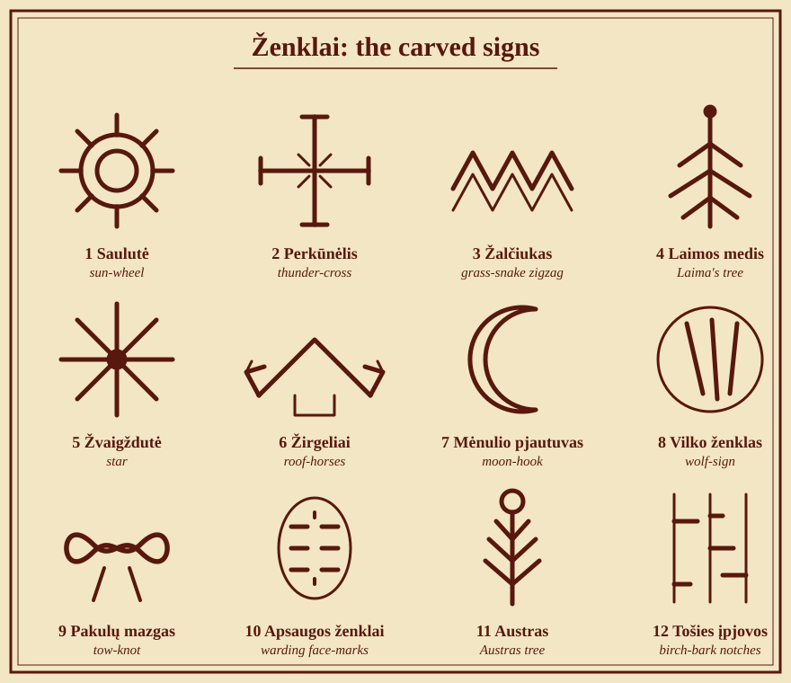

Ženklai ir apsaugos¶
Lore of the Craft: Ženklai, the carved signs
„A mason may carve a sun-wheel in the vault of any church, so long as his hand means it. The bishop sees ornament. The house sees a guest.“
[The saga’s invention] Saying of the Vilnius stonecutters, recorded in a mason’s tally-book.
Stored intention¶
A sign is stored intention: carved, burned, woven or embroidered, then fed. Blood feeds a strong sign, milk a gentle one, ash a binding one. It needs no gift, only a steady hand and a mind that means it (Ženklai; Power systems, §2.3).
[Historical record] The motifs are real. Baltic ornament carries sun-wheels, the perkūnėlis, grass-snake zigzags, Laima’s tree and the Austras tree on lintels, spindles, cradles, beehives, belts and the horse-head gables of roof-ridges. That they store intention and must be fed is [The saga’s invention] overlay.

Twelve signs, drawn as strokes¶
The glyph shapes are reconstructions. The record gives the folk motifs but no standard forms, and the saga’s notes name the signs without prescribing their outlines.
The catalogue¶
# |
Sign |
Shape |
Use |
Cost (feed) |
Counter |
|---|---|---|---|---|---|
1 |
Saulutė |
A ringed circle with eight rays |
Repels night spirits; keeps a room warm in will |
Milk at dawn |
Fades unfed; half strength in consecrated stone |
2 |
Perkūnėlis |
A cross with short bars at each tip |
Wards lightning, breaks curses on a threshold, marks an oath-place |
Blood, once |
A broken sign reverses for a night |
3 |
Žalčiukas |
A double zigzag |
House-luck; the line darkens to warn of poison |
Milk weekly |
Unfed, it goes quiet |
4 |
Laimos medis |
A stem with slanting boughs |
Eases childbirth; guards a cradle from changeling-laumės |
A thread of the mother’s hair |
Carved by a hand that does not mean it |
5 |
Žvaigždutė |
An eight-point star |
Helps sight-workings; marks a seer’s tools |
None: it drinks starlight |
Overcast sky; daylight |
6 |
Žirgeliai |
A roof-ridge with two horse-heads |
Turns aside unbound spirits from the house |
Renewed each spring |
Neglect; the Unbinding’s worse spirits |
7 |
Mėnulio pjautuvas |
A crescent hook |
Hides things from searchers by distraction, not illusion |
Ash |
Searchers who know what to look for |
8 |
Vilko ženklas |
Three claw-strokes in a ring |
Recognition: any vilkatas knows an object that bears it |
Not stated |
Not stated |
9 |
Pakulų mazgas |
A figure-eight tow-knot |
The Root-Mother’s sign; carried by Elena at Krėva (Book I ch. 12) |
Not stated |
Not stated |
10 |
Apsaugos ženklai |
Rows of short strokes on the face |
Warding marks; passers-by look aside (Book III ch. 1) |
Not stated |
A commander who respects them still sees them |
11 |
Austras |
A tree with upturned boughs and a round crown |
Attested folk motif; no saga use specified |
Not stated |
Not stated |
12 |
Tošies įpjovos |
Notches cut in birch-bark |
Pack signals among the Iron Wolves |
Not stated |
Not stated |
Left open: only signs 1–7 have a stated use and feed. For those, the „counter“ column applies the general rules below. For signs 8–12 only an occurrence is given, so costs and counters are marked „not stated“ rather than invented.
General rules¶
A sign fades if it is not fed.
A broken sign reverses for a night.
Signs on iron are twice as strong but anger the laumės.
A sign carved by a baptised hand works only if the carver means it (the Law of Truth). This is how the old ways survive inside churches.
In consecrated stone a meant sign works at half strength. Masons‘ saulutės in Gothic vaults are the last ward on Vilnius in the late books (Book II ch. 11; Book V ch. 20).
Worked example: Kęstutis’s sword¶
Kęstutis’s sword carries a perkūnėlis burned under the grip and fed once with the prince’s blood. In Book I ch. 2 the blade rusts, and Vytautas reads it as „a prophecy of the earth“: the sign is failing because the Pact is cracking. In Book III ch. 17 the rust-eaten sword is brought to the oath-night before Grunwald. Vytautas cuts his palm and lets the blood run onto the sign; the rust „drank it like earth“ and stopped spreading. It did not vanish: a repaired sign does not undo what the breaches cost, it only ends the loss. Compare the sword.
Enchantment tiers¶
Tier |
What it is |
Lasts |
|---|---|---|
Charm-object |
One sign, one effect |
A season |
Warded object |
Several signs, fed by an owner |
A lifetime |
Bound object |
Signs plus a Kalba working plus blood: an artifact |
Until its fate in the books |
See Artifacts and Amber craft.